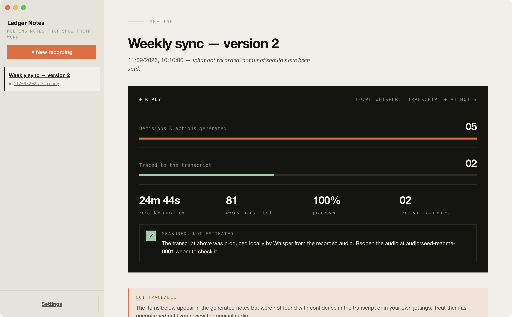

Local-first meeting notes
AI notes you can
actually defend.
Ledger Notes records your calls, transcribes them on your own machine, and writes up the summary, decisions and action items. Then it does the part other AI notepads skip: it shows you which of those items trace back to something that was actually said — and flags the ones that don't.
Free and open source · Apple Silicon · Bring your own API key

What it produces
Raw transcript in. Receipts out.
Jot whatever you want during the call, or nothing at all. The transcript fills in around what you marked, and every decision and action carries a mark saying where it came from — the recording, your own notes, or neither.
Decisions
Hold the October date and cut the reporting module from scope
Hire two backend engineers next quarter
Actions
Marina talks to the design team this week
found in the transcript not found — flagged for review
During the call
Write three words. Get the paragraph.
Type sparse notes while the meeting runs — a name, a number, a thing you can't let slip. Each line becomes an anchor: the transcript fills in the detail around it, and what you flagged as mattering stays at the top of its section.
Your raw jottings are kept exactly as you typed them, in their own tab. The model expands on them; it never overwrites them. And an item that came from your notes rather than from the recording is labelled as such — your assertion is not the same kind of claim as a quote, and the ledger doesn't pretend otherwise.
Templates
A standup isn't a customer call.
Pick the meeting type and the notes come out shaped for it — a 1:1 gets feedback and agreements, a client call gets objections and commitments, an interview gets signals and open questions.
Each template also declares which of its sections make factual claims, so the traceability check follows the structure instead of guessing at it. Change the template on a meeting you already recorded and the notes are rewritten from the same transcript.
The problem
Your notepad can't tell a quote from a guess. You have to.
Every AI notetaker hands you a tidy list of decisions and action items. What none of them tell you is which lines came from the recording and which ones the model filled in because they sounded plausible.
That difference matters the moment someone asks "wait, did we actually agree to that?" — and you are the one who forwarded the notes.
Hire two backend engineers next quarter — this appears in the generated notes, but nothing close to it was found in what was said. Treat it as unconfirmed until you check the audio.
What you get instead
A ledger, not a vibe.
Every meeting opens with the same accounting: how many decisions and action items the model produced, and how many of them can be matched back to the transcript. The gap between the two bars is the whole point — you see the shortfall before you read a word.
traced to what was said generated, unverified
Measured, not estimated The transcript is produced locally by Whisper from your own recording. The audio file stays on disk — open it and check any line yourself.
How it works
Four steps, three of them on your machine.
Mic, system audio, your notes
Captures both sides of the call, not just your voice — and gives you a page to jot on while it runs.
Whisper, locally
faster-whisper runs on your own hardware. The recording is never uploaded anywhere, and there is no per-minute cost.
Claude or GPT, your key
Only the transcript text goes to the model you choose, under your own API key. No key configured? It falls back to notes extracted straight from the transcript.
Trace every claim
Each decision and action item is checked back against the transcript. What doesn't match gets flagged, by name, with what to do about it.
Privacy
Your audio never leaves the machine.
Recordings and transcripts are written to your own disk, under your user library folder. Transcription runs locally. Nothing is sent to a server we control, because there is no server we control.
The one thing that does leave, if you configure it, is the transcript text — sent to Anthropic or OpenAI under your own API key, to write the notes. Skip the key and even that stays home.
Audio recordings · transcripts · generated notes · your API keys
SENT OUT, IF YOU OPT INTranscript text → your chosen AI provider, with your key
Features
What's actually in the box.
Nobody sees it join
It records the audio on your machine, so no participant shows up in the call and nobody gets a notification.
Zoom, Meet, Teams, in person
Because it captures system audio rather than integrating with a platform, the meeting app doesn't matter.
Shaped by meeting type
Six built-in templates. Change one after the fact and the notes get rewritten from the same transcript.
Every claim checked
Decisions and actions are matched back to the transcript, and what doesn't match is flagged by name.
Plain Markdown
Notes are editable text, stored on your disk. Nothing is locked in a format you can't read without the app.
Read the whole thing
Including the prompt that writes your notes and the check that verifies them. No accounts, no telemetry, no server.
Download
Ledger Notes for macOS
Free and open source. Apple Silicon build.
Download the latest releaseRequires macOS on Apple Silicon, plus Python 3 with faster-whisper for local transcription (setup instructions are in the README). The build is deliberately unsigned — this project is free and has no Apple Developer ID — so the first launch needs right-click → Open. Only once.
Why does it need Python?
Transcription runs through faster-whisper, which is a Python library. The app spawns it as a local sidecar process. Bundling a self-contained Python runtime into the app is on the list, but not done yet — until then the setup step in the README is required.
Is the traceability check reliable?
It is a word-overlap heuristic, not a semantic one. It reliably catches items that were invented outright, which is the common failure mode, but it can miss a paraphrase that drifts from what was actually meant. Treat it as a first filter, not a proof.
Does it join meetings as a bot?
No. It records the audio playing on your machine and your microphone, so nothing shows up in the participant list and nobody gets a join notification.
What does it cost?
The app is free and the source is on GitHub. Transcription is local, so it costs nothing per meeting. The only spend is whatever your own Anthropic or OpenAI key is charged for writing the notes — and you can run it with no key at all.